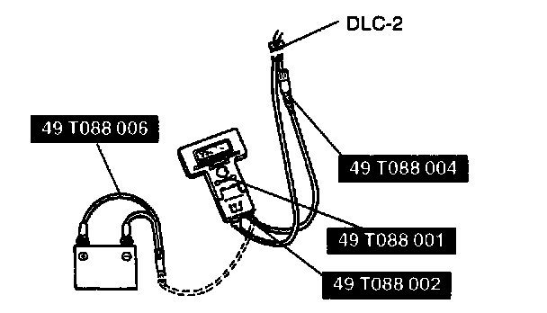

Initial Inspection and Diagnostic Overview
A/C Cut Control Inspection1. Start the engine.
2. Turn the A/C switch and fan switch on.
3. Verify that the A/C compressor magnet clutch actuates.
4. If is does not actuate, go to symptom troubleshooting No.23 "A/C does not work".
5. Fully open the throttle valve and verify that the NC compressor magnet clutch does not actuate for 3-6 seconds.
6. If it actuates, inspect the following.

1. Connect the NGS tester to DLC-2.
2. Turn the A/C switch off.
3. Turn the ignition switch to ON.
4. Select "SIMULATION TEST" and press TRIGGER.
5. Select "IG ON TEST" and press TRIGGER.
6. Select "A/C RLY" and press TRIGGER.
7. Press START.
8. Turn the A/C relay from off to on and inspect if the operation sound of the relay is heard.
9. If the operation sound is heard, inspect TP V PID.
10. If the operation sound is not heard, inspect following.
- A/C relay
- Open or short to ground circuit in wiring harness and connectors (Main relay-A/C relay-PCM terminal 1S.)
- A/C related parts